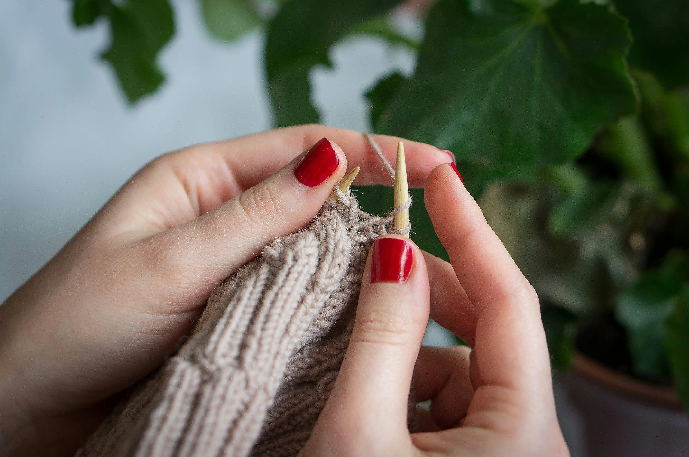

Poznaj mnie
Witajcie na mojej stronie! Mam na imię Basia i jestem pasjonatką rękodzieła. Od wielu lat tworzę unikalne, ręcznie robione przedmioty, które dodają uroku i ciepła każdemu wnętrzu. Moja przygoda z rękodziełem zaczęła się jeszcze w dzieciństwie, kiedy to z fascynacją obserwowałam babcię dziergającą piękne serwetki i ozdoby. Z czasem odkryłam, że ręczne tworzenie to nie tylko moje hobby, ale i sposób na wyrażenie siebie oraz dzielenie się radością z innymi.
Każdy przedmiot wykonuję z największą starannością, wkładając w niego całe swoje serce i duszę. Używam tylko najwyższej jakości materiałów, dbając o to, by moje wyroby były nie tylko piękne, ale i trwałe.
Inspirację czerpię z natury, tradycyjnych wzorów oraz współczesnych trendów. Dzięki temu moje prace łączą w sobie klasyczną elegancję z nowoczesnym stylem, co sprawia, że pasują do każdego wnętrza. Moim celem jest tworzenie przedmiotów, które nie tylko będą cieszyć oko, ale także wniosą do Waszych domów odrobinę magii i wyjątkowego klimatu.
Zapraszam do zapoznania się z moją ofertą i odkrycia piękna ręcznie robionych przedmiotów. Mam nadzieję, że znajdziecie tutaj coś, co Was zachwyci i sprawi, że Wasze domy staną się jeszcze bardziej przytulne i wyjątkowe.